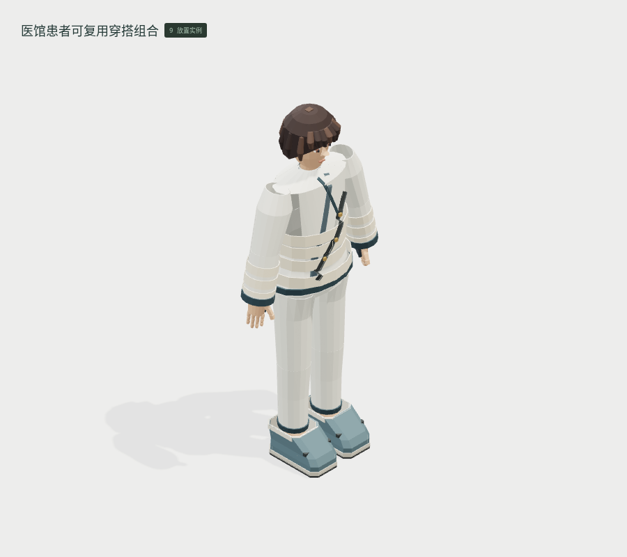
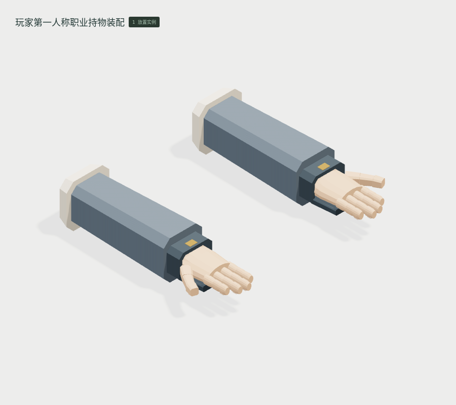
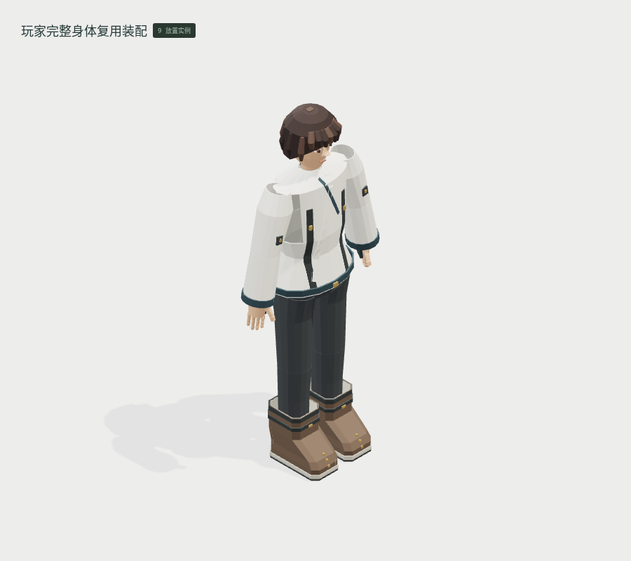
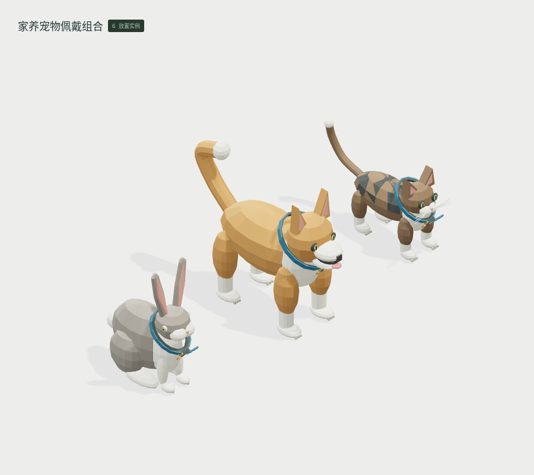
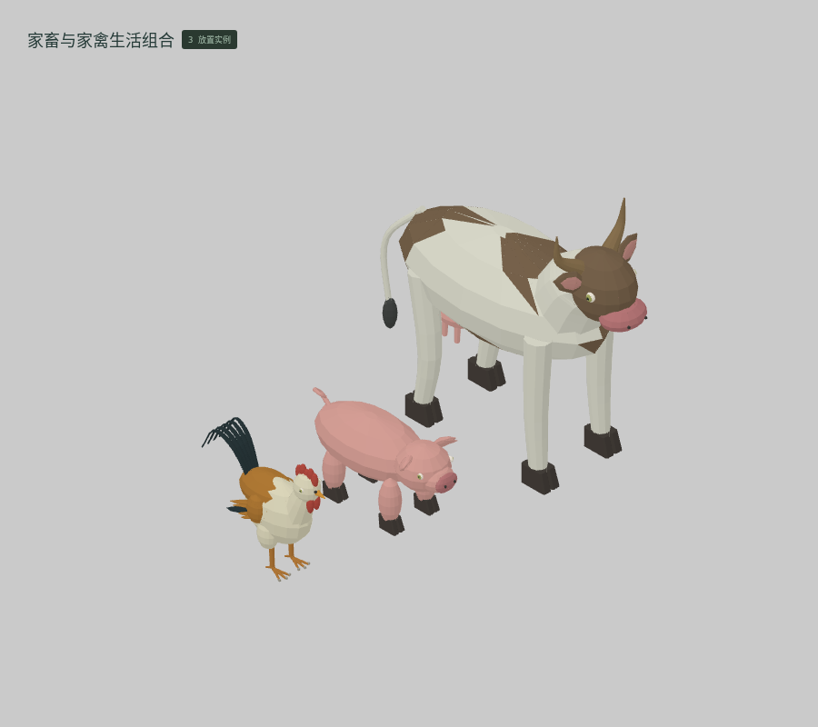
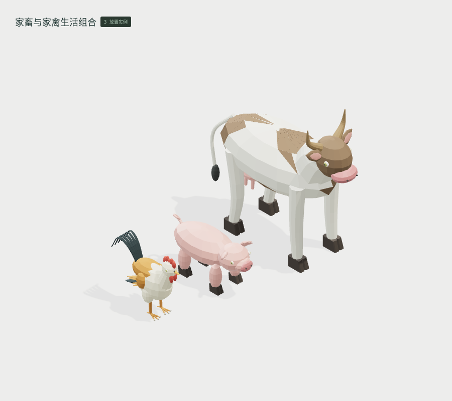
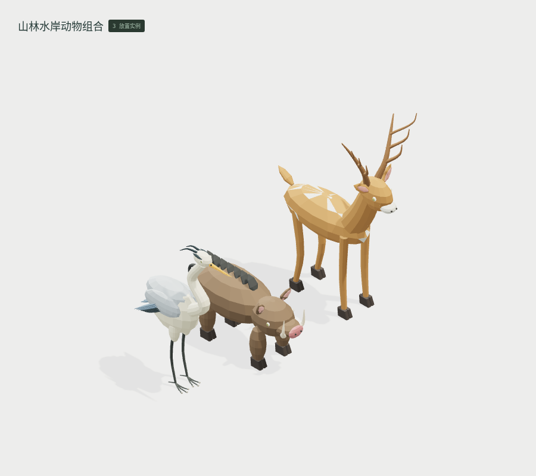

<!doctype html><meta charset="utf-8"><style>*{box-sizing:border-box}body{margin:0;background:#dce0d8;color:#273b32;font:18px system-ui,'PingFang SC'}header,footer{padding:24px 34px}h1{margin:0 0 10px;font-size:28px}main{display:grid;grid-template-columns:1fr 1fr}article{border:1px solid #aebbae}h2{font-size:20px;margin:18px 24px}section{display:flex}figure{margin:0;width:50%}img{width:100%;display:block}figcaption{padding:12px 22px}</style><header><h1>云山 · 本批模型的素色 / 材质试作</h1>相同资产数据 · 相同观察方向 · 两种显示方案 · 实际 WebGL 截图</header><main><article><h2>CHAR-174 医馆患者可复用穿搭组合</h2><section><figure><figcaption>基础检查：实体素色</figcaption></figure><figure><figcaption>参考材质试作：PBR、透明与实际光照</figcaption></figure></section></article><article><h2>CHAR-175 玩家第一人称职业持物装配</h2><section><figure><figcaption>基础检查：实体素色</figcaption></figure><figure><figcaption>参考材质试作：PBR、透明与实际光照</figcaption></figure></section></article><article><h2>CHAR-176 玩家完整身体复用装配</h2><section><figure><figcaption>基础检查：实体素色</figcaption></figure><figure><figcaption>参考材质试作：PBR、透明与实际光照</figcaption></figure></section></article><article><h2>CHAR-332 家养宠物佩戴组合</h2><section><figure><figcaption>基础检查：实体素色</figcaption></figure><figure><figcaption>参考材质试作：PBR、透明与实际光照</figcaption></figure></section></article><article><h2>CHAR-333 家畜与家禽生活组合</h2><section><figure><figcaption>基础检查：实体素色</figcaption></figure><figure><figcaption>参考材质试作：PBR、透明与实际光照</figcaption></figure></section></article><article><h2>CHAR-334 山林水岸动物组合</h2><section><figure><figcaption>基础检查：实体素色</figcaption></figure><figure><figcaption>参考材质试作：PBR、透明与实际光照</figcaption></figure></section></article></main><footer>材质试作不等于参考图达标。尚无真实折射、全局光照、光学成像或设备动画。纯色模式将玻璃显示为实色，便于检查占用格。</footer>